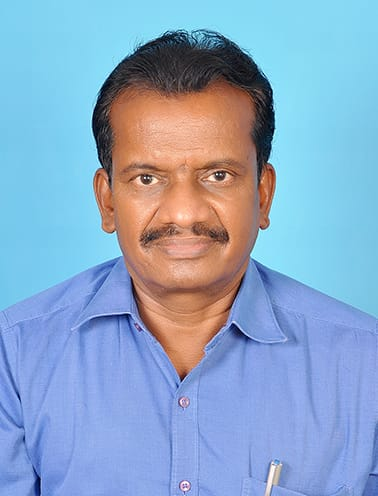
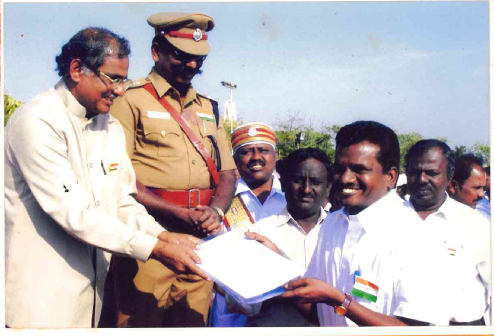

Soil Steps
Team
Director

Thiru Sarathy Subburaj
Director & Co-Founder · Retired Additional Director, TN Handloom Department
Meet
THE CORE COUNCIL

Founder
Thiru. Sivasooryaa Subburaj
Founder, Soil Steps
- Background
- Agricultural Science & Engineering innovator, born 24 July 2001, Kovilapatti, Tamil Nadu.
- Achievements
- National Child Award 2016 (President of India), Dr APJ Abdul Kalam IGNITE Award 2017, Young Scientist India 2016, and a contributor to Space Kidz India's NSLV KALAM programme.
- Involvement
- Founded Soil Steps to bring that innovation work to small farmers. Full archive on the Founder page.

Recognition
A Legacy That Inspires.
Before helping lead Soil Steps, Thiru Sarathy Subburaj dedicated his career to government service, retiring as Additional Director of the Tamil Nadu Handloom Department. A journey built on dedication, service, and commitment to the handloom community. This photograph captures a moment of recognition from that journey — a legacy that continues to inspire.
The people behind the mission
OUR TEAM
Different strengths. One shared commitment to moving Soil Steps forward.
01
People · Partnerships · Outreach
COMMUNITY
02
Technology · Development
TECHNICAL
03
Strategy · Resources · Execution